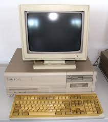

History
Techcon was founded in 1990 during the tech boom. it was a way of showing and introducing people to new tech products and promoting them. whether its new software or hardware, techcon has always been a place to see the latest and greatest in the tech world.
This is how a cellphone looked before our slim, small and smart phones.
